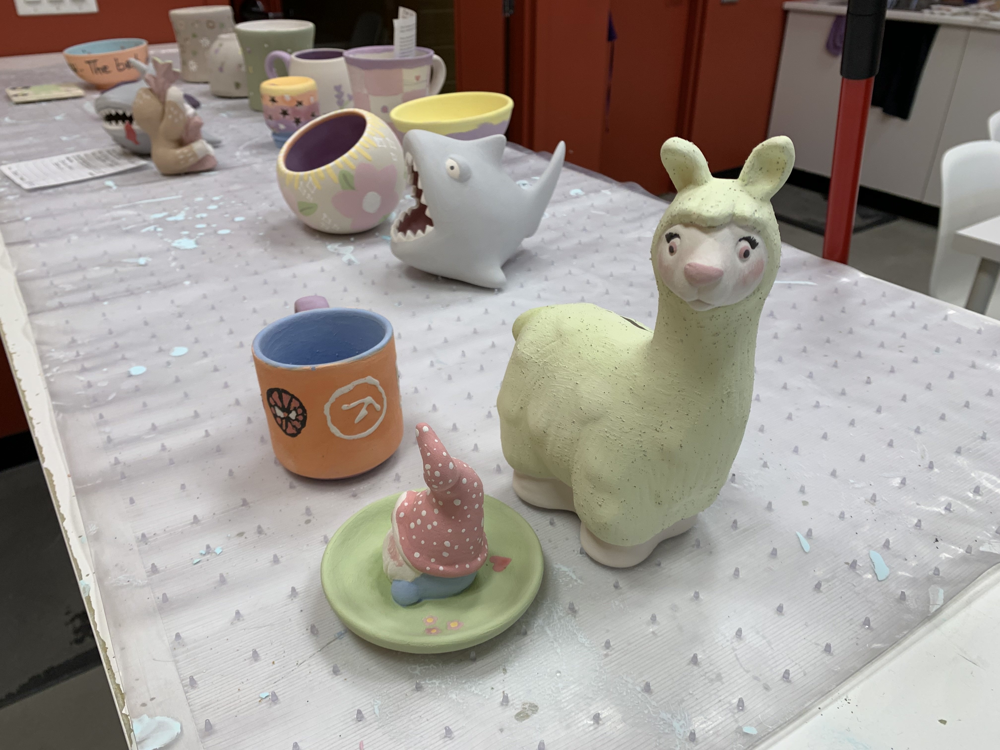
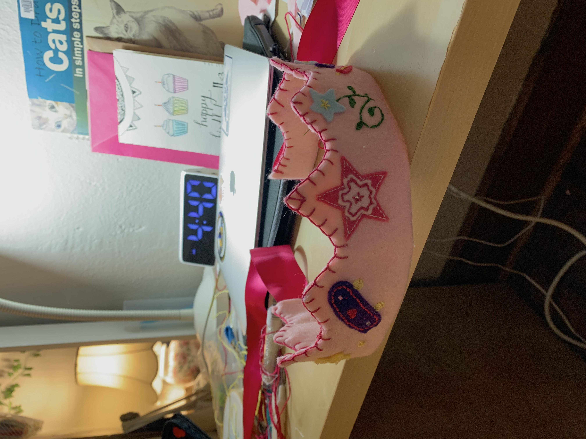
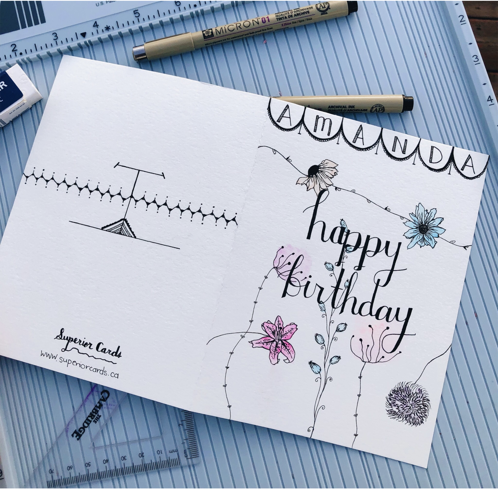
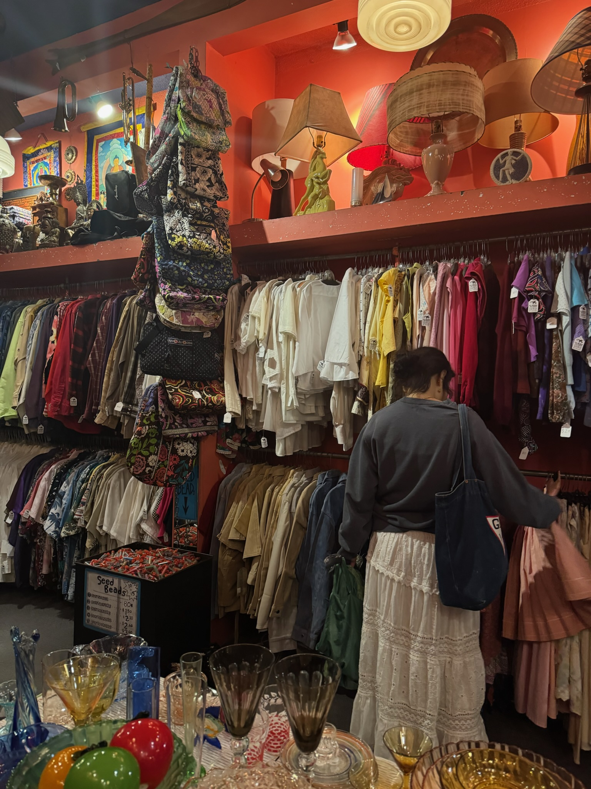
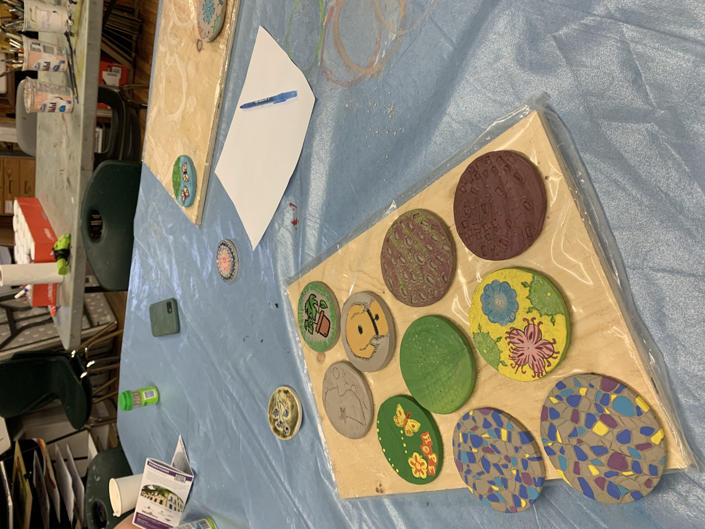
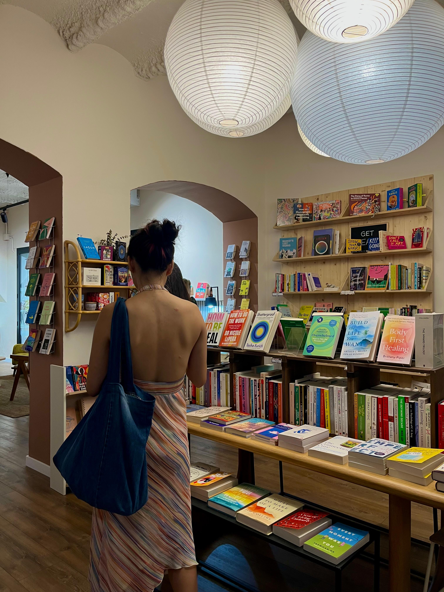
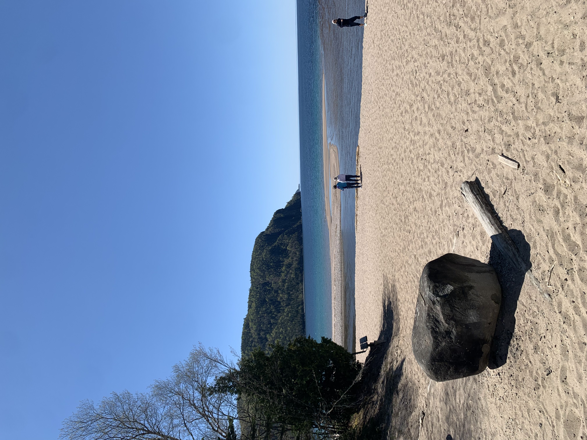

Having worked with Canada's official emissions projections and across three federal departments,
I hope to help bridge the gap between economic models and environmental reality.
Hi, my name is Daisy. I'm originally from Canada and currently pursuing a Master's at the Barcelona School of Economics (BSE). My undergraduate degree is a Bachelor of Mathematics from the University of Waterloo.
Professionally, I have worked as a Junior Economist for Environment and Climate Change Canada. Previous work responsibilities have
included developing ETL pipelines, automation tools, and data visualizations, so I am familiar with working with large datasets to extract meaningful insights.
Beyond my technical skills, I've also had experience leading student policy initiatives and organizing events to bring people together around ideas and public policy.
With a strong interest in sustinability, particularly circular economy and renewable energy, I am eager to explore opportunities that share my vision for creating a more sustainable future.
Selected work
Water markets in Northern China
University of Waterloo, April 2026
Looked at why water rights trading in Northern China falls short, given a
region with 10% of the country's fresh water but 30% of its population. Assessed three fixes
for efficiency and equity, and recommended clearer water rights law, smart-meter monitoring
and targeted incentives, with legal clarification ranked best on both.
The British Empire's Legacy in the Global Trade of Plastic Waste
University of Waterloo, March 2025
Traced how British entrepôts in Singapore, Malacca, Penang and Hong Kong, built to ship rubber and tin,
became hubs of today's $1.2 trillion plastics trade. Drew on colonial archives, treaties and
trade data to show how Malaysia absorbed the cost of the waste after China's 2018 import ban.
With two teammates, implemented a three-region (high, medium, low income) integrated
assessment model using a set of provided equations. Ran scenarios on emission targets and
discount rates out to 2300, and found that the social cost of carbon was 11 to 21 times higher
at a 1% discount rate than at 5%, depending on the region.
Available upon request
CV
Education
September 2026 to July 2027
Master's in Economics of Energy, Climate Change & Sustainability
Barcelona School of Economics
September 2021 to April 2026
Bachelor of Mathematics, Honours Mathematical Economics
University of Waterloo
Experience
September to December 2024
Junior Economist
Environment and Climate Change Canada
Analyzed emissions projections and built interactive Power BI dashboards for Canada’s official GHG projections website.
May to August 2024
Junior Policy Analyst
Innovation, Science and Economic Development Canada
Researched telecommunications policies and automated mobile plan price collection using Python, saving 5+ hours per week.
September 2023 to April 2024
Data Science & Analytics Analyst
Health Canada
Built Python tools to process file metadata and transcribe audio, and evaluated AI tools for organizational use.
January to April 2023
IT Business Analyst
Verto Health
Built a Python ETL pipeline to generate statistical reports and managed risk assessments for 160 change requests.
Extracurriculars
May 2025 to April 2026
Policy Director
University of Waterloo Young Liberals
Launched the club's first policy summit and raised policy submissions from 1 or 2 a term to 10.
January to April 2025
Economics Tutor
University of Waterloo
One-on-one tutoring in microeconomic and macroeconomic theory.
Senior honours essay
Investigating the Impact of Bill 187 on Ontario's Electronics Industry
Senior honours essay, University of Waterloo, December 2025. Supervised by Dr. Predrag Rajsic.
Ontario's Bill 187 proposes a right to repair for electronics. This essay asks what it
could mean for manufacturers, repair businesses and consumers. It uses Ontario industry
and trade data to look at firms' cost structures, the size of the repair market, and
possible effects on consumer behaviour and electronic waste. It then compares the bill
with right-to-repair laws in the EU, UK and US to find design gaps that affect repair
access and how long products last.
Conclusion: Bill 187 makes repair easier by opening up spare parts and repair information, but without rules on cost, planned obsolescence, and consumer trust, most people will likely keep replacing devices instead of repairing them.
Skills developed: Industry and trade data analysis, comparative policy analysis, literature review, data visualization
A Youth Finance Chair campaign at a provincial political convention, attending Model UN conferences, and leading regular events as Policy Chair to engage fellow students. Not pictured: Debate society, a personal favourite and a good place to learn to listen as well as speak.





Making things
I love trying new art projects, practicing my calligraphy (usually through making cards for friends and family, as I used to own a small greeting card business),
as well as shopping for unique finds and DIY materials for my next creative endeavour.


Making time
Reading is my favourite way to slow down, whether that’s wandering the library stacks or a book on the beach here in Barcelona. I also try to make time for what matters most: spending time with my family, friends and nature.
Let's talk!
I’m open to opportunities in the intersection of economics, policy and sustainability. Email is the quickest way to reach me.